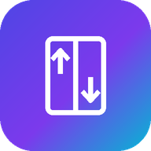

Lift Component Selector
Lift Electrical R&I · Version 4
You are offline. Connect to the internet before opening the app.
Open your lift software
Use your existing software email and password. Your Google Sheet data stays in the same project.
Open Lift SelectorThe app opens in a separate browser tab so these instructions stay available.
If Google Drive says it cannot open the file
This error happens before the lift software loads. Try a clean browser session:
- Press Copy app link below.
- In Chrome, tap ⋮ → New Incognito tab.
- Paste the copied link in the address bar and open it.
- Log in using your lift software account.
Alternative: try your primary Google profile
This may help with account routing. If it still fails, use Incognito.
Try primary Google profileIf Incognito also fails, the administrator must check the active Web app deployment URL and access settings. Making the Google Sheet public is not required.
Opening the page inside WhatsApp or another app? Choose “Open in Chrome” first. The app needs an internet connection.